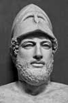

Atina’nın altın çağında, en etkili liderlerinden biri olan Perikles (MÖ 495-429) bir komutan ve politikacıdır. Şehir devletinin aynı zamanda hem büyük bir askeri güce hem de bir sanat ve felsefe merkezine dönüşmesine yardımcı olmuştur. Şehrin başarısındaki rolü çok büyüktür. Öyle ki MÖ 460-429 arasındaki refah dönemi kimi zaman “Perikles Çağı” olarak da adlandırılmaktadır.

Yunan tarihçi Thucydides (MÖ 460-404) “Perikles Atina’nın en önde gelen insanıydı; sözü dinlenir, yaptıkları saygı görürdü,” diye yazar.
Perikles’in anne ve babası Atina’nın aristokrat ailelerindendir. Müzik, retorik ve felsefe alanlarında son derece iyi bir eğitim almıştır. Atina’nın Pers saldırılarını püskürttüğü bir dönemde yetişmiştir. Marathon Savaşı (MÖ 490) o henüz küçük bir çocukken meydana gelmişti. Salamis Savaşı’na (MÖ 480) ise ilk gençlik çağında tanıklık etmiştir.
MÖ 461 yılında Perikles politikaya atıldı. Şehir meclisinde asillerin güçlerinin azaltılmasını amaçlayan bir oylamanın düzenlenmesine yardımcı oldu. Oylamadan sonra Perikles şehirdeki en önemli politik figürlerin arasına girmiştir. En büyük rakibi olan Cimon (MÖ 510-450) o yıldan sonra sürgüne gönderilmiştir. Bu sayede Perikles’in önü açılmış, sonraki otuz yıl boyunca Atina’yı rakipsiz bir biçimde yönetme şansını yakalamıştır.
Perikles bir halk kahramanı ve demokrasinin savunucusu olarak tanınmaktadır. Savaşta öldürülen Atinalı askerler için yaptığı konuşma demokrasinin bilinen en iyi savunuları arasında yer almaktadır: “Bizim yönetimin azınlığın değil çoğunluğun elinde olmasına demokrasi adını verdiğimiz doğrudur. Ancak eğer adalet herkes için eşit bir biçimde uygulanabiliyorsa bu yapının mükemmel olduğu söylenebilir. Ve bir şekilde sıyrılıp kendilerini gösteren vatandaşların kamu hizmetinde yer almaları bir ayrıcalık değil, erdemin ödülü olmalıdır.”
Perikles Akropolis’i inşa etti. Tiyatrolar açtı. Aiskhylos (MÖ 525-455), Euripides (MÖ 484-406), gibi oyun yazarlarına maddi destekte bulundu. Akropolis’teki mermer figürleri yapan heykeltıraş Phidias (MÖ 490-430), Perikles’in dostu ve taraftarıydı.
Perikles Sparta ile yapılan savaş sırasında MÖ 429’da öldü. Onun ölümü ve şehrin savaşta yenilgiye uğraması Atina’nın altın çağının sonu oldu.
Ek Bilgiler
1- Perikles Aiskhylos’un dostuydu. Onun yazdığı Persler adlı tarihi oyunun ilk gösterimini finanse etmişti (MÖ 472). Bu oyun Salamis Savaşı’ndaki Atina zaferinin sonuçlarını anlatmaktadır.
2- “Perikles Çağı” terimi zaman zaman bir ülkenin ya da sanayinin altın çağını anlatmak için kullanılmaktadır. Örneğin 2005 yılında Time Dergisi’ne yazan bir film eleştirmeni 1930’ları ve 1940’ları “Selüloid’in Perikles Çağı” diye tanımlayarak dönemin, film endüstrisi tarihi için taşıdığı öneme işaret etmiştir.
3- Parthenon, Atina kentinin Savaş Tanrıçası Atena’ya adanmıştır. İnşası on beş yıl sürmüş ve yirmi bin ton mermer kullanılmıştır. Yapı daha sonraları kilise ve cami olarak kullanılmış, son olarak 19. yy’da tarihi bir alan olarak koruma altına alınmıştır.